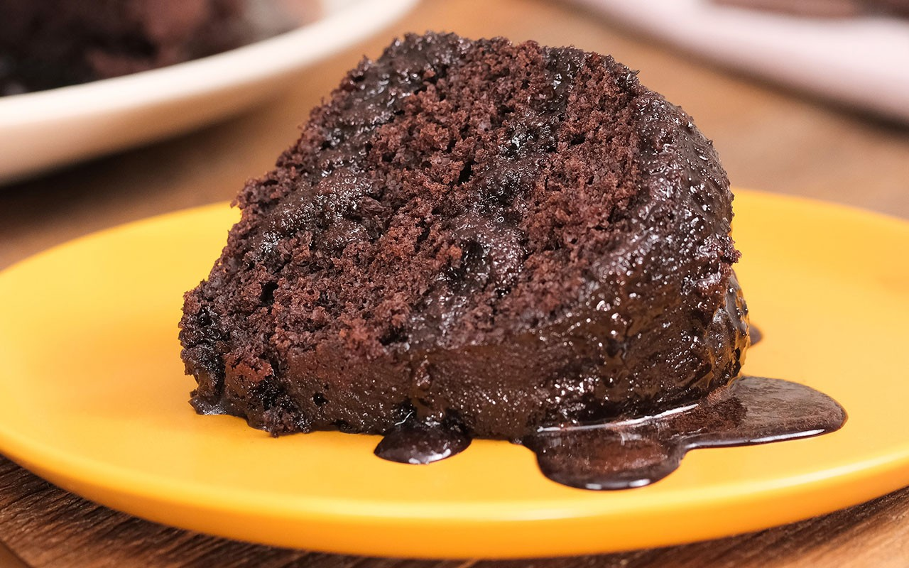

Home
Bolo de Chocolate

Description
Recipe by Laissa
Easy chocolate cake recipe with a delicious flavor.
Ingredients
- 1 xicara de oleo de soja
- 2 xicaras de farinha de trigo
- 1 xicara de chocolate em po ou cacau
- 1 xicara de agua morna ou 1 xicara de cafe
- 2 xicaras de acucar
- 3 ovos
- 1 colher de sopa de fermento
Steps
- bater os liquidos (ovo, oleo e agua) morna
- acrescentar o acucar (peneirado) na mistura
- acrescentar aos poucos a farinha de trigo
- acrescentar o chocolate peneirado
- acrescentar o fermento
- transferir a massa para uma forma untada
- levar a forma ao forno pre-aquecido a 180 graus